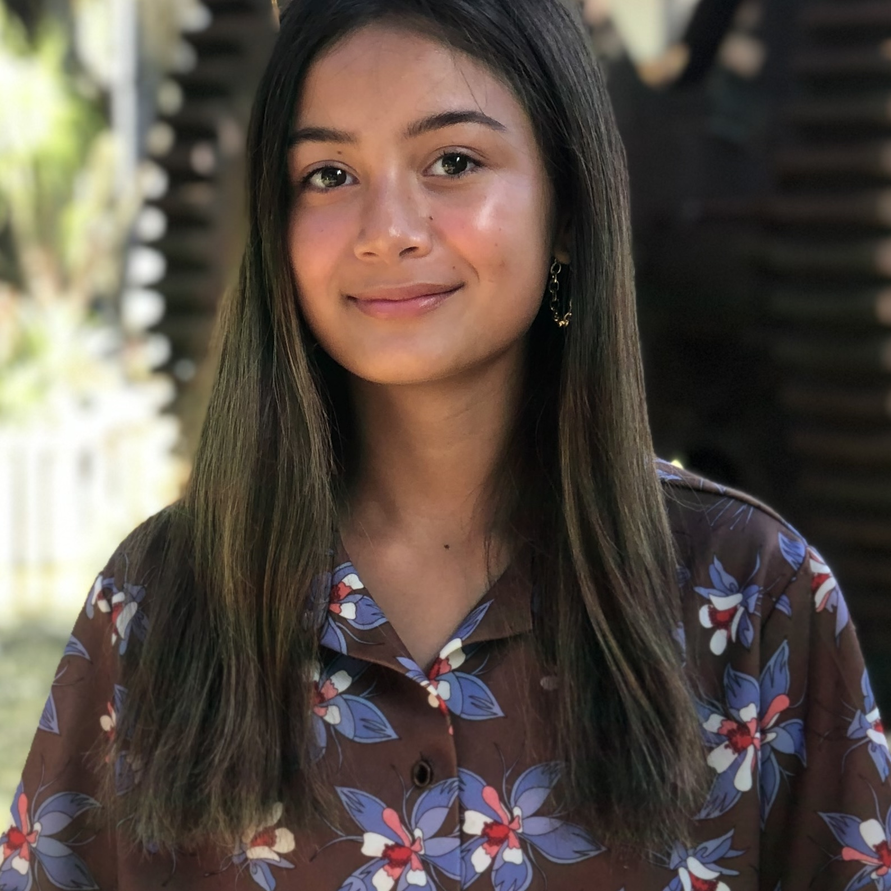

I am currently a sophomore design major at the University of San Francisco with plans of graduating in 2026. I am from Bakersfield, California. In my spare time, I enjoy making jewelry, reading, and collecting trinkets.
I have always had an interest not only in art, but how art can be used to communicate. In design, I have been able to work with this concept and utilize my skills to portray ideas to my audience. I believe that the designer holds a lot of power in being able to communicate visually with others. Thus, my goal is to use this creative outlet as a designer to spread important messages through my work.